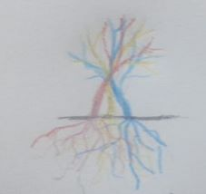

Este ARG se trata de plantas estranhamente coloridas que, com o passar do tempo foram se desenvolvendo e dando vida a seres desconhecidos, aberrações, monstros e outros não catalogados. Nesse mundo as cores importam mais do que nunca, podendo alterar definitivamente sua percepção da realidade. Esse mundo é colorido até demais...

Uma misteriosa planta
Esse é o ponto de partida para nossa história, a planta multi-colorida. Essa planta surgiu na Terra por motivos desconhecidos e é composta de três ramificações nas quais tem as três cores primarias (azul,amarelo e vermelho), ao longo de seu desenvolvimento